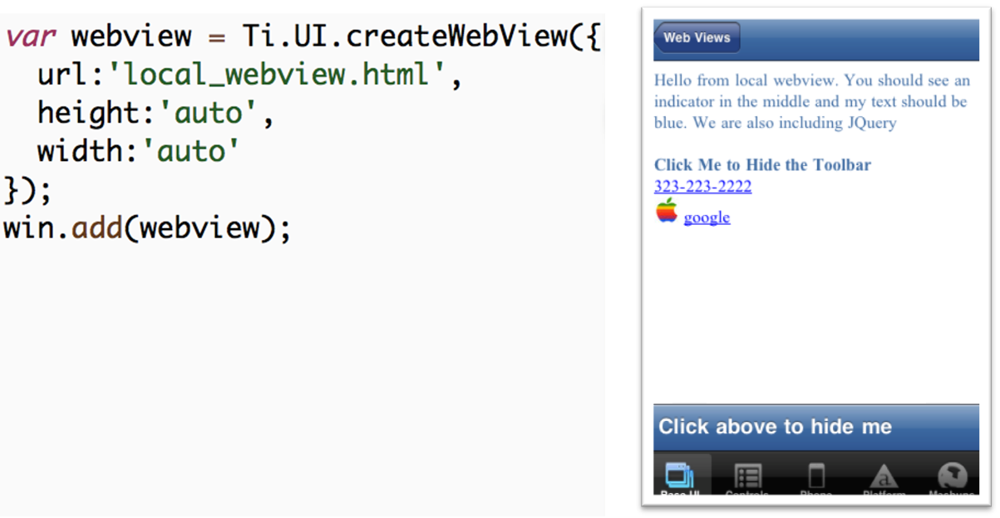

Integrating Web Content
Titanium Certified Developer (TCD) Training
In this lesson, you will:
- Integrate the WebView component into your application
- Explore WebView gotchas that you must watch out for in your apps
- Identify novel uses of the WebView
Integrating Web Content
HTML/CSS are often the only/best way to accomplish certain tasks:
- Rendering HTML/CSS (duh)
- Canvas (animations)
- Walking HTML documents
Remote Web Content
Uses might include pulling in blog content from an RSS feed (hint) or re-purposing (semi) static content from an existing site

Local Web Content
Webkit can sometimes do something we can't, or we need to re-use existing code (ours or someone else's) - in those cases, we can ship HTML/CSS/JS with our app

Local Web Content - Inline
Sometimes HTML markup is the best way to display small chunks of text or links (Android handles both natively)

Communicating With The Wrapper
Remote web content has no access to Titanium APIs
Limited Titanium API access within local web pages:
- Logging APIs (Ti.API.info and friends)
- Application Level Events
(Ti.App.fireEvent/addEventListener)
Native APIs must be accessed indirectly via application level events
WebView Gotchas
Among the most expensive components to create
Should not be embedded in other scrollable views
Common misuse - inside TableViewRows (bad performance)
It is possible to implement your whole UI in HTML/CSS, but native UI is what your users expect
Can't download/run unapproved code from a server
Novel Uses of the WebView
Display text with embedded links (think Twitter client)
Display PDF documents and more (iOS, see next slide)
Retrieve and parse HTML using the DOM (easier than in native Ti code, where you'd need to do string gymnastics)
Longer forms on iOS (next/previous buttons, auto resizing)
Embedded Documents on iOS
WebView on iOS can display embedded:
| Excel | PowerPoint | |
| Keynote | Word | |
| Numbers | RTF | |
| Pages | RTF Directory | |
Demo
- What you will demo
Summary
In this lesson, you:
- Integrated the WebView component into your application
- Explored WebView gotchas that you must watch out for in your apps
- Identified novel uses of the WebView
Q&A
Lab Objectives
In this lab, you will:
- Create an RSS Reader
- Pull data from an XML feed
- Display individual blog posts in a WebView
- Create an "about" page using local HTML
wiki.appcelerator.org/display/td/285+Integrating+Web+Content
Solution Walkthrough